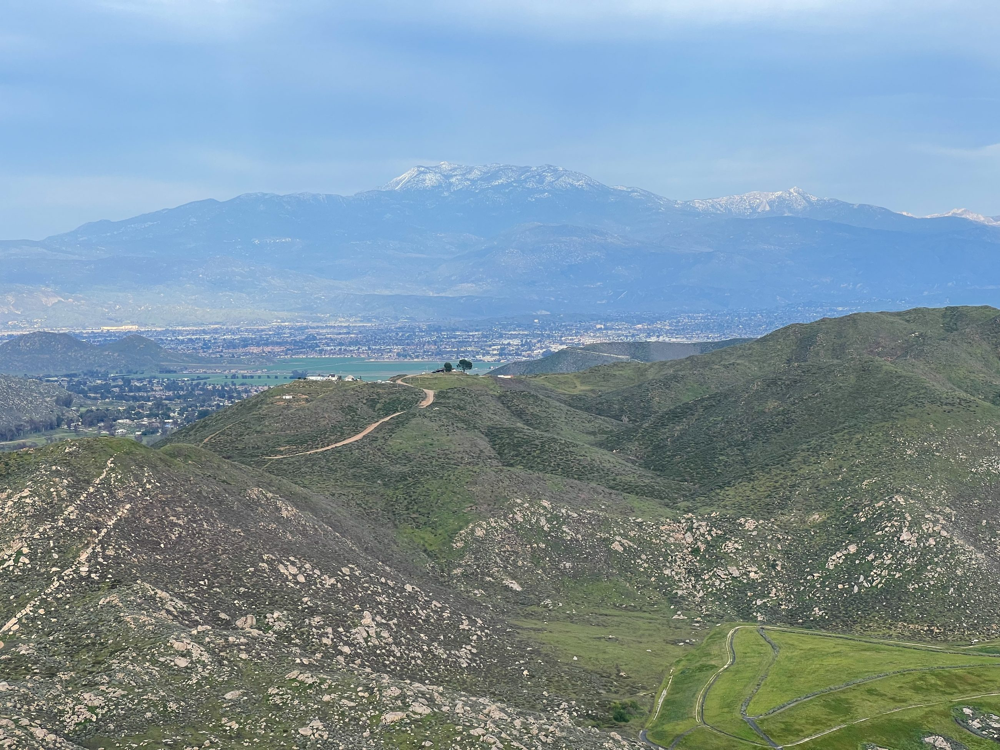
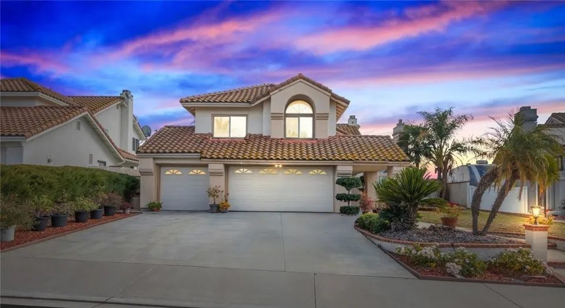
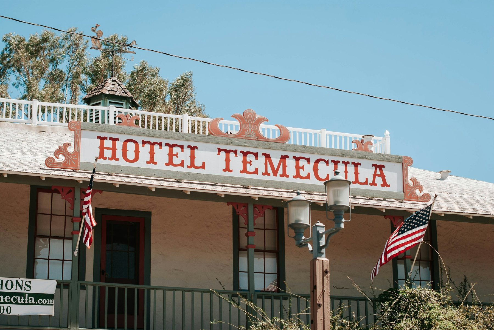
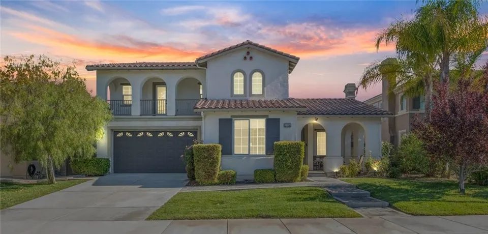
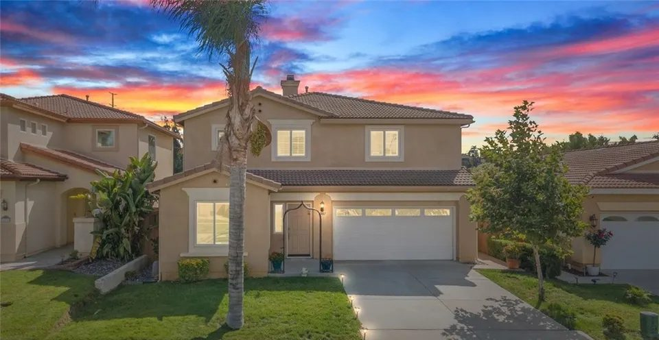
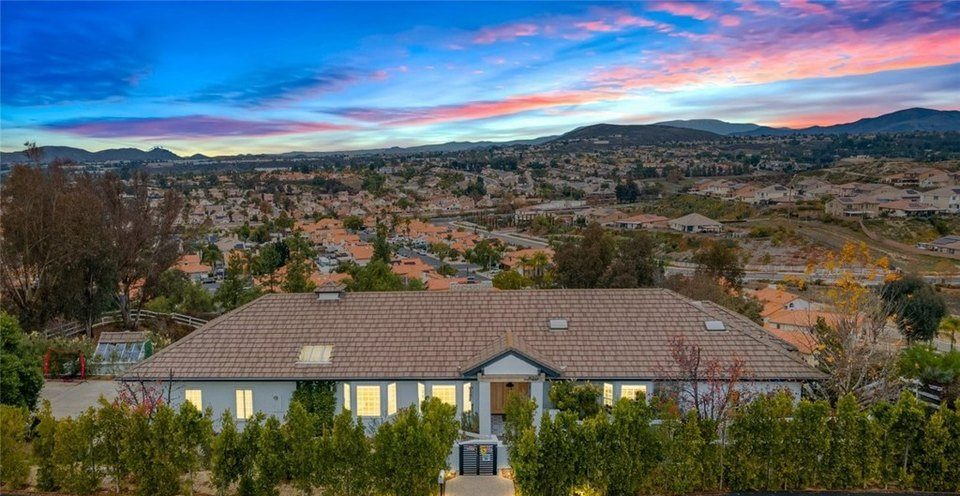

Buyer's Guide
How to Buy a House in California
From pre-approval to the keys, the help first-time buyers can apply for, and what Jim checks along the way.
Buyer's Guide
Five steps to the keys
Buying a house in California follows a set order: the loan, the area, the offer, the inspections and disclosures, then escrow. Here is each step, and the questions Jim asks at each one.
First-time buyers can apply for state and county help with the down payment; both are linked below.

Step 1 of 5
Get pre-approved
A lender's pre-approval tells you what you can borrow and shows a seller you can close. First-time buyers can also look at the California Housing Finance Agency loan and down payment programs, and at Riverside County's first-time homebuyer program, which has income limits and a homebuyer class.

Step 2 of 5
Choose the area
Each community page covers the roads, the schools, the water districts and the rules that come with a house there. Start with Temecula, Murrieta or Menifee, or see them all.

Step 3 of 5
Make an offer
Jim writes the offer with you: the price, the deposit, the loan and inspection contingencies, and the dates. When several buyers want the same house, the terms count as much as the price.

Step 4 of 5
Inspect, and read the disclosures
Your inspections run on the contract's clock, and the seller's disclosures arrive in escrow, including the Natural Hazard Disclosure. If the home is in a Mello-Roos district or a homeowners association, read the special tax notice and the association's documents before your contingencies end.

Step 5 of 5
Close, then watch for the supplemental bill
After escrow closes, the county reassesses the home and sends a supplemental tax bill for the rest of the fiscal year, separate from the regular bill. The Riverside County Assessor explains how it is worked out.
Questions
Buying a house in California
Is there help for first-time buyers in California?
Yes. The California Housing Finance Agency runs first mortgages and down payment programs for first-time buyers, and Riverside County runs its own first-time homebuyer program with income limits and a homebuyer class. Programs and limits change, so check each one's current terms.
What is Mello-Roos?
A Community Facilities District: a special property tax on top of the regular one, paid by the owners inside the district. Many newer neighborhoods have one, and the seller must provide a Notice of Special Tax.
What is a supplemental tax bill?
After a purchase, the county reassesses the home and bills the difference for the rest of the fiscal year. It comes in addition to the regular property tax bill.
Should I sell before I buy?
It depends on your loan and how much risk you want to carry. Jim works both sides and can time the two.
Contact
Start your search
Call or text (951) 514-0734, and Jim or one of the team's buyer's agents will set up your search.